2026-10-20；Single-Trial 公开开发面板。本文为保留运行的通信导出，运行摘要与逐单元记录是事实来源。
EEG：脑电；HbO/HbR：氧合/去氧血红蛋白；ridge：带正则的线性岭回归。
主指标是整对隐藏 Hb 的归一化均方根误差（NRMSE），按训练标准差（SD）评分。联合 ridge 0.9971、空间 ridge 0.9978、单核心 K1 1.1716、双核心 K2 2.1478；越低越好。
29 人按 17／6／6 人划分训练、选择和评价；评价含 36 个窗口。统计独立单元是被试，通道、时间点和重复窗口都不增加独立人数。
K2 的主结果含预定失败惩罚；34/36 窗成功。K1 的五个空间／数量候选均选 EEG 权重 0，不能把它们的表现解释为 EEG 的增量。
完整合成支持匹配双源条件下的恢复能力；实测没有确认正确几何、EEG 配对或两套独立轨迹的稳定额外收益。
来源：/SSD_2/pid-mcm-implementation/experiments/runs/physiology_semantic_tokenizer/shared_driver_spatial/20261020_measured_v2/summary.json先区分观测数量、空间对应与动态容量，再解释结果。
观测数量：同一目标及同一 K1 动态下，比较四对与两对 Hb、十二路与六路 EEG；子面板由最大面板切片，训练尺度不重新拟合。
空间对应：同样信号、相同参数数目与选择预算，比较真实、置换和 K1 均匀几何；置换改变通道与几何权重的对应。
动态容量：守恒状态空间模型简称 SSM。K2 含两套独立驱动及初态；另用同一读出、固定 EEG 权重 1 的轨迹相等限制模型，区分读出家族和动态自由度。
跨模态增量：正确 EEG 与 Hb-only、任务和条件匹配的错配 EEG 比较，并与获得相同可见输入的 ridge 比较。
来源：experiments/configs/physiology_semantic_tokenizer/shared_driver_spatial_v1.yaml受试者划分先于信号读取；每人两个记录、每记录三个不重叠窗口。
训练：17 人、102 窗；选择：6 人、36 窗；评价：6 人、36 窗。划分种子固定为 20261016，没有根据评价误差调整窗口或传感器。
评价包含 18 个运动想象窗（左手 8、右手 10）与 18 个心算／基线窗（心算 4、基线 14）。本组结果不是任务分类性能。
36 个评价窗中，29 个具有同被试、同任务／条件、同传感器布局（montage）的非重叠错配 EEG；其余 7 个保留缺失，不用不匹配对象补齐。
这些被试已有公开开发历史；换分组没有形成新的未查看确认集。本版没有读取其他数据集、保护分区或个体解剖信息。
来源：/SSD_2/pid-mcm-implementation/experiments/runs/physiology_semantic_tokenizer/shared_driver_spatial/20261020_measured_v2/plan.json每个点是传感器位置；模板几何不等于个体皮层定位。
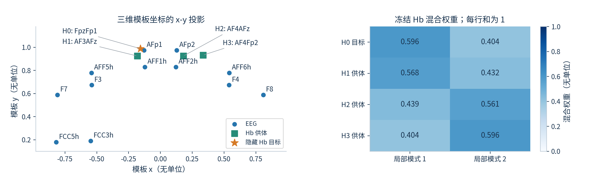
目标为 FpzFp1。目标与三个供体不共享已核验光极；H1/H2 共享探测器，H2/H3 共享光源。四对 Hb 不代表四个独立组织来源。右图给出实际冻结的 K2 空间混合权重。
来源：/SSD_2/pid-mcm-implementation/experiments/runs/physiology_semantic_tokenizer/shared_driver_spatial/20261020_measured_v2/plan.json原生 EEG 为微伏；Single-Trial fNIRS 输入是双波长光强。
EEG 使用原生 200 Hz、双侧乳突参考的公开信号，保留眼动等伪迹。五频带为 1–4、4–8、8–13、13–30、30–45 Hz，构造 4 Hz 的参考相对对数功率（log-power）。
Hb 从原生 760/850 nm 光强构造光密度，再用修正 Beer–Lambert 定律（MBLL）转换为相对 HbO/HbR；原生样本按互不交叠的 bin 聚合，不跨隐藏 Hb 区间滤波。
每窗 30 秒，从事件前 5 秒至事件后 25 秒；前 5 秒定义参考，输出为 120 个位置。模型对自身轨迹施加同一参考算子。
EEG 每频带跨通道共用训练均方根（RMS），Hb 所有通道／色团共用一个训练 RMS。评分另用逐特征训练 SD；这些相对坐标不是绝对浓度标定或噪声似然。
来源：src/data/shared_driver_spatial.py; src/inference/observation_baselines.py所有任务为离线条件重建或补全，不是实时预测。
整对隐藏：目标 HbO/HbR 的整个 30 秒窗口都不进入拟合，包括前 5 秒参考；目标参考只定义评分坐标。其他 Hb 供体和完整 EEG 可见。
中心隐藏：仅隐藏事件后 7–13 秒的目标 Hb，对该 6 秒区间评分；目标自身的其他时间可见。完整重建：目标可见，评价事件后 0–25 秒。
整对隐藏和完整重建都在事件后 0–25 秒评分。隐藏先于输入组装和训练坐标变换；目标均值、幅度或参考不得用于校正预测。
训练模板和 ridge 始终排除目标对；因此只有整对隐藏时才与 SSM 同输入。中心任务另设目标自身上下文插值；完整可见时该插值复制目标，零误差没有预测意义。
来源：experiments/configs/physiology_semantic_tokenizer/shared_driver_spatial_v1.yamlLaTeX 公式位图；符号、单位和时间支持在本页解释。
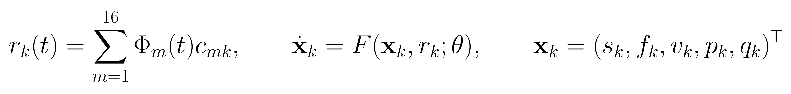
每个模式使用 16 个预定余弦时间系数，并拟合 5 个初态；K1 每窗 21 个未知量，K2 每窗 42 个。驱动 r 是条件模型输入，不能当作已测得神经活动。
s 为血流调节信号，f 为相对流量，v 为相对血容量，p 为归一化总 Hb 状态，q 为归一化去氧 Hb 状态。血管参数共享且冻结；没有每通道自由生理参数、额外 Hb 时间残差或网络连接。
LaTeX 公式位图；符号、单位和时间支持在本页解释。
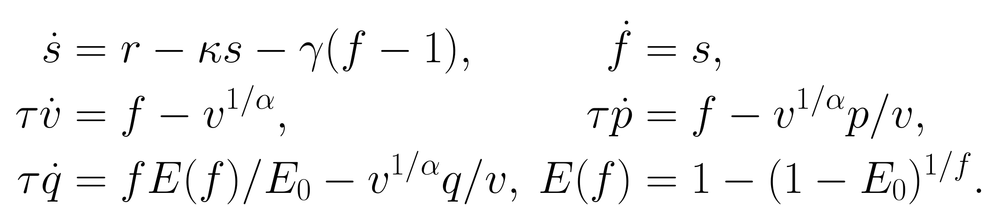
冻结取值：通过时间常数为 2 秒，阻尼系数为 0.64，反馈系数为 0.32，流出指数参数为 0.32，静息提取率为 0.32；有效神经血管增益为 1。这些是条件模型假设，不是逐被试生理估计。
流量、血容量及 Hb 状态保持正值，并检查绝对 HbO/HbR 的物理关系。RK4 在每个 0.25 秒间隔内积分四步；用八步重放检查输出误差。总 Hb 状态与血容量没有被预先强制相等。
LaTeX 公式位图；符号、单位和时间支持在本页解释。
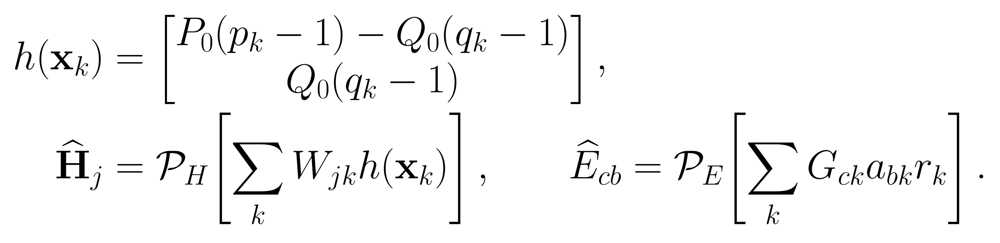
Hb 两行依次为 HbO 和 HbR；静息总 Hb 常数为 1，去氧 Hb 常数为 0.35。W 为非负、逐行和为 1 的冻结几何矩阵；K1 的每个 Hb 权重都是 1，多个读出不能独立产生不同峰形。
G 是固定高斯空间核，每列按欧氏范数归一；核宽由正的传感器到锚点距离中位数确定。a 是每模式五个训练拟合的带符号频带系数。它们映射 log-power，不能称为 EEG 电压 leadfield 或脑源定位。
训练与选择完成后，评价过程不再重新校准读出或尺度。
训练被试：拟合共同坐标与逐特征 SD；用所有训练 Hb 做条件拟合，得到驱动参考，再回归五个带符号频带系数／模式。该驱动参考不是神经真值。
选择被试：分别评价 EEG 权重 0、0.1、1，以隐藏 Hb 的被试等权误差选择；数值失败使用预定惩罚，平局优先较小权重。
评价被试：冻结训练尺度、空间矩阵、频带系数、基线和选定权重；当前窗口只拟合驱动系数及核心初态。训练目标通道可用于训练，这不是未见传感器泛化。
空间 ridge 输入其他 Hb；联合 ridge 输入其他 Hb 加 EEG；训练模板是训练窗平均目标。ridge 使用相同训练分区与正则，独立于 SSM 拟合成功与否。
来源：/SSD_2/pid-mcm-implementation/experiments/runs/physiology_semantic_tokenizer/shared_driver_spatial/20261020_measured_v2/calibrationLaTeX 公式位图；符号、单位和时间支持在本页解释。
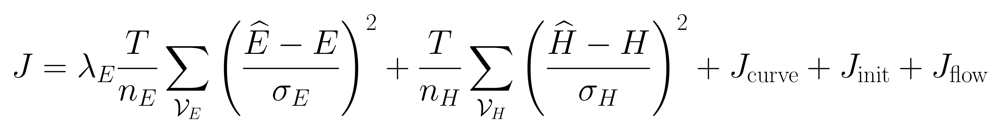
T 为 120；n 是该模态实际可见标量数量，σ 为冻结训练 SD。EEG 权重为零时，该模态在变换与初始化之前就被忽略。通道增加不会自动提高某模态的总数据权重。
曲率系数 0.01、物理初态系数 100、对数流量先验系数 1；流量对数标准差为 0.693147。最多 180 次目标求值，梯度阈值为十万分之一。本目标是工程准则，训练 SD 不是传感器噪声标准差。
LaTeX 公式位图；符号、单位和时间支持在本页解释。
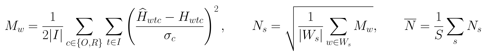
I 是本任务预定评分时间，W 是同一被试的可用窗口，S 是独立被试数。HbO/HbR 在窗口内等权；先平均归一化均方误差，再开方，再平均被试，不能改成全部时间点直接池化。
数值失败的窗口均方误差固定为 100。不可用错配供体保留在计划分母，但不进入共同可用配对收益；成功子集另外展示，不能替代含失败惩罚的主结果。
LaTeX 公式位图；符号、单位和时间支持在本页解释。
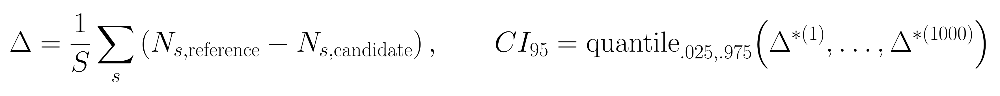
正收益表示候选误差更低；单位是训练 SD 归一化误差的绝对差，不是百分比。先取双方共同可用的同身份窗口，再进行被试内聚合。
评价仅有 6 名被试，自助重采样（bootstrap）每次抽取整人，训练与选择冻结。区间为描述性逐项 95% 区间，未做多重比较校正；跨零表示方向不确定，排除零也不等于新的确认性证据。
每场景独立训练／选择／评价；评价为 4 个生成身份、每身份 2 条记录。
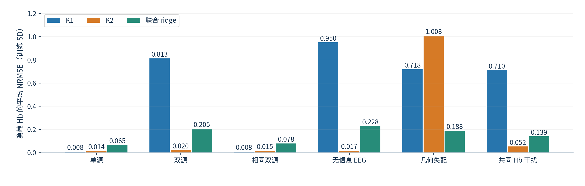
各场景 2,632 个评价单元均成功。双源 K2 为 0.0201，优于 K1 的 0.8127 和联合 ridge 的 0.2048；几何失配时 K2 为 1.0084。相同双源表示时间秩塌缩，EEG 读出家族并不等于 K1。
来源：/SSD_2/pid-mcm-implementation/experiments/runs/physiology_semantic_tokenizer/shared_driver_spatial/20261020_synthetic_v1/summary.json已知生成器状态是合成真值；实测没有对应潜变量真值。
无信息 EEG 场景使用独立生成的同谱／同空间结构 EEG。Hb 供体仍含双源信息，因此 K2 可以在主要依赖 Hb 的条件下恢复隐藏目标，不能据此声称 EEG 有效。
共同 Hb 干扰为向 HbO/HbR 同向添加的已知成分；K2 误差 0.0519，K1 为 0.7104。更低的总波形误差可以伴随对干扰的吸收。
几何失配条件下，生成器使用冻结置换的空间映射，真实几何候选因假设不匹配而恶化。该反例检验模型脆弱性，不是一个新的生理机制。
完整合成采用训练 Hb 条件驱动来校准 EEG，已经不使用上一轮冒烟检查的已知读出；两轮配置、时长与随机样本不同，数值不直接作前后改善比较。
来源：/SSD_2/pid-mcm-implementation/experiments/runs/physiology_semantic_tokenizer/shared_driver_spatial/20261020_synthetic_v1/summary.json每格为四个生成身份的中位数；颜色是归一化误差，不是相关系数。
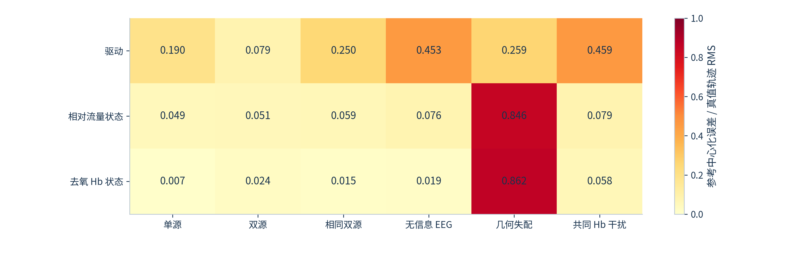
先平均记录内模式，再平均身份内两记录，最后取四身份中位数。无信息 EEG 和共同干扰下，驱动误差约 0.45，隐藏 Hb 误差仍可很低。此处分母是真值轨迹的参考中心化 RMS，区别于 Hb 评分的训练 SD。
来源：/SSD_2/pid-mcm-implementation/experiments/runs/physiology_semantic_tokenizer/shared_driver_spatial/20261020_synthetic_v1/scenarios星号标出冻结选择；选择使用平均 NMSE，主报告使用被试平均 NRMSE。
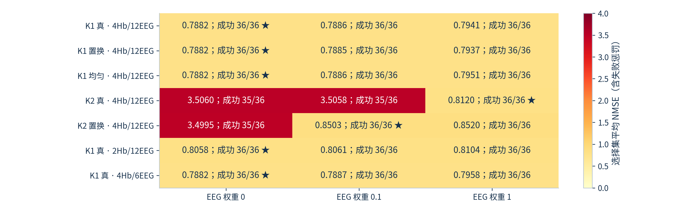
K2 真几何选择权重 1，置换几何选择 0.1。真几何的权重 0 和 0.1 各有一次选择窗失败，惩罚影响了选择；不能将选中较大权重解释为更强生理耦合。
来源：/SSD_2/pid-mcm-implementation/experiments/runs/physiology_semantic_tokenizer/shared_driver_spatial/20261020_measured_v2/calibration完整计划为 11,844 单元；一个单元是窗口×模型×隐藏方式×配对×方法。
评价共有 11,042 个成功单元、67 个数值失败单元、735 个错配 EEG 不可用单元。735 个不可用单元来自 7 个缺少匹配供体的窗口及其全部相关比较。
67 个数值失败均达到 180 次目标求值预算，不能作为缺失删除。K2 置换模型占 40 个，K2 真几何占 21 个，K1 两 Hb 面板占 6 个；它们不是独立被试计数。
训练条件拟合：每个 K1 候选为 102/102 成功；K2 真几何为 98/102，置换为 96/102。EEG 读出使用成功训练子集，原始观测基线仍使用全部训练窗口。
没有追加评价调参、重试困难窗口或扩大优化预算。正式运行使用 24 进程、单线程数值库和独立 user systemd 服务；失败与资源先导记录均保留。
来源：/SSD_2/pid-mcm-implementation/experiments/runs/physiology_semantic_tokenizer/shared_driver_spatial/20261020_measured_v2/summary.json柱为六名被试等权均值；黑点各代表一名被试，不是窗口。
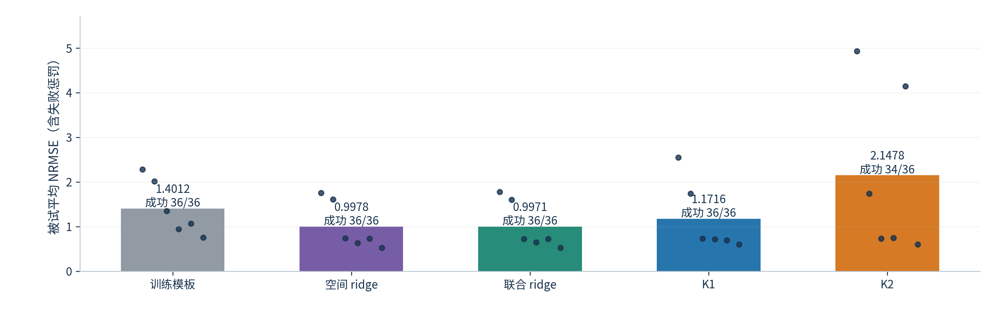
联合 ridge 0.9971、空间 ridge 0.9978、K1 1.1716、K2 2.1478。所有方法预测同一隐藏目标；K2 的两个失败窗按冻结 NMSE 惩罚进入主结果。
来源：/SSD_2/pid-mcm-implementation/experiments/runs/physiology_semantic_tokenizer/shared_driver_spatial/20261020_measured_v2/summary.json共同可用 36 窗、6 人；误差收益及描述性 95% 被试 bootstrap 区间。
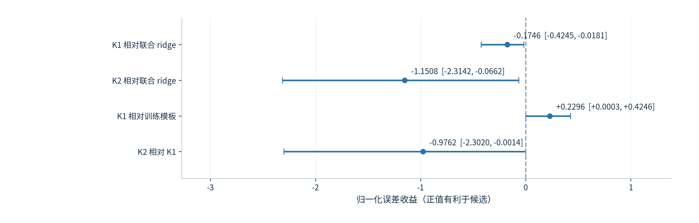
K1 相对联合 ridge 的收益为 −0.1746；K2 相对 K1 为 −0.9762。负值有利于参考方法。区间未做多重比较校正，结论限定于冻结面板和算法预算。
来源：/SSD_2/pid-mcm-implementation/experiments/runs/physiology_semantic_tokenizer/shared_driver_spatial/20261020_measured_v2/summary.jsonHb-only 对照有 36 共同可用窗；错配 EEG 对照有 29 共同可用窗；均为 6 人。
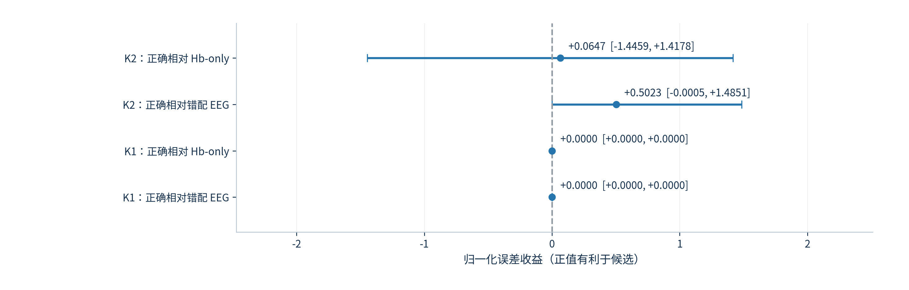
K2 相对 Hb-only 收益 0.0647，区间 [−1.4459, 1.4178]；相对错配 EEG 为 0.5023，区间 [−0.0005, 1.4851]，均跨零。K1 权重为 0，因此配对对照在共同窗口上严格相同。
来源：/SSD_2/pid-mcm-implementation/experiments/runs/physiology_semantic_tokenizer/shared_driver_spatial/20261020_measured_v2/summary.json每项固定目标、时间支持和训练尺度；零收益需要结合选定策略解释。
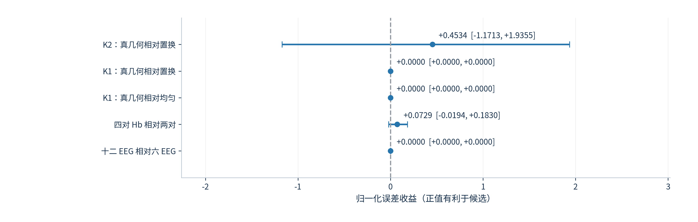
K2 真实几何收益 0.4534，但区间跨零。增加 Hb 的收益 0.0729，区间 [−0.0194, 0.1830]。K1 的几何及 EEG 数量对照为零，是忽略 EEG 后的相同模型，不能泛化为几何信息无价值。
来源：/SSD_2/pid-mcm-implementation/experiments/runs/physiology_semantic_tokenizer/shared_driver_spatial/20261020_measured_v2/summary.json固定 EEG 权重 1；两核自由模型与轨迹及初态相等的限制模型配对。
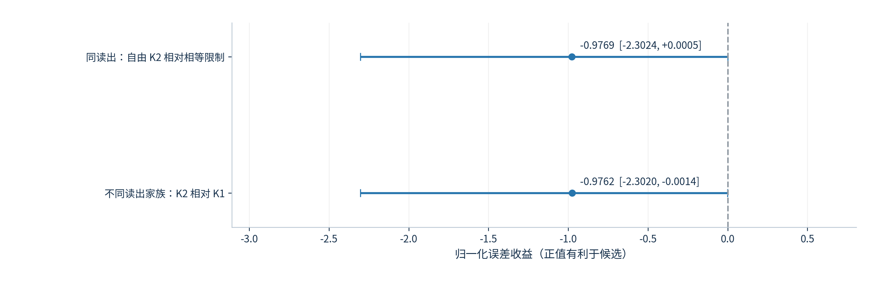
严格限制模型保留 K2 的加载两列之和，并将曲率、初态和流量先验各乘 2。解除轨迹与初态相等约束的收益为 −0.9769，区间 [−2.3024, 0.0005]；不支持为当前预测任务增加动态复杂度。
来源：/SSD_2/pid-mcm-implementation/experiments/runs/physiology_semantic_tokenizer/shared_driver_spatial/20261020_measured_v2/summary.json中心任务只评 6 秒；其他任务评事件后 25 秒，跨任务数值不能解释为同一难度。
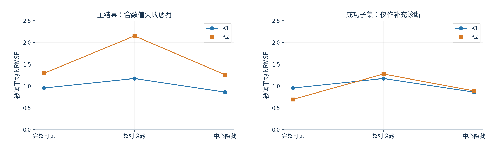
K2 完整可见成功子集误差 0.6920，含失败后为 1.2893；整对隐藏成功子集为 1.2734，含失败后为 2.1478。两种汇总的窗口集合不同，成功子集不是新的配对优势证据。
来源：/SSD_2/pid-mcm-implementation/experiments/runs/physiology_semantic_tokenizer/shared_driver_spatial/20261020_measured_v2/summary.json目标事件后 7–13 秒隐藏；目标区间外的时间可见。
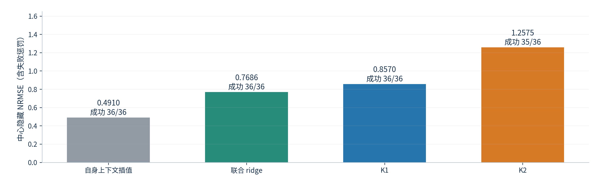
自身上下文插值为 0.4910，联合 ridge 为 0.7686，K1 为 0.8570，K2 为 1.2575。插值只使用可见目标上下文；ridge 全程排除目标，因此不能把中心任务当作所有方法同输入的主比较。
来源：/SSD_2/pid-mcm-implementation/experiments/runs/physiology_semantic_tokenizer/shared_driver_spatial/20261020_measured_v2/summary.json每点是一个成功窗口，同一人的多个点相互依赖；两条零线只表示相关符号。
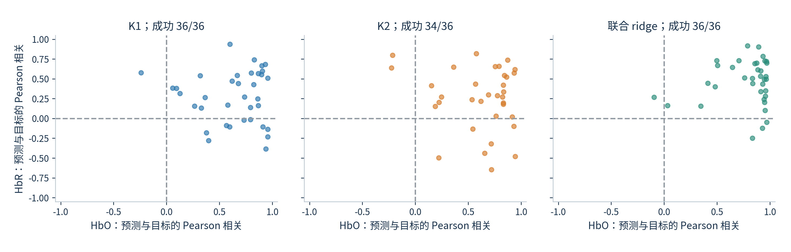
相关在各色团的评分时间内单独计算，不受正比例幅值变化影响；较高相关仍可有幅度偏差。K2 两个失败窗不出现在本图，但保留在主风险中。相关也不能给潜在成分指定生理来源。
来源：/SSD_2/pid-mcm-implementation/experiments/runs/physiology_semantic_tokenizer/shared_driver_spatial/20261020_measured_v2/summary.jsonsubject_25 / session_01 / 事件 0 / mental_arithmetic / BL
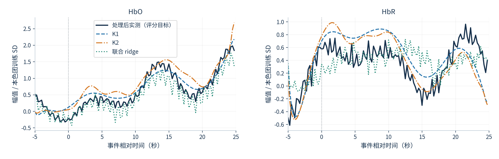
按 K1 主任务误差选择第 1/36 窗，三例来自不同被试。目标全程隐藏，事件时刻为 0；各色团用固定训练 SD 表示幅值。窗口 NRMSE：K1 0.2675；K2 0.3113；联合 ridge 0.2791。
来源：eeg_fnirs_single_trial|subject_25|session_01|event=0|prefrontal__eee78d70376440fd与前页使用同一窗口和同一评分区间；幅度比与相关分别解释。
HbO 在评分区间由 −0.21 变为 +1.84 个训练 SD；最大值时刻为事件后 24.50 秒。K1：相关 0.96，幅比 1.01，均差 +0.09 SD，峰差 +0.25 秒。K2：相关 0.93，幅比 1.20，均差 +0.25 SD，峰差 +0.25 秒。联合 ridge：相关 0.97，幅比 0.79，均差 −0.20 SD，峰差 −0.25 秒。
HbR 在评分区间由 +0.57 变为 +0.40 个训练 SD；最大值时刻为事件后 21.50 秒。K1：相关 0.51，幅比 1.28，均差 +0.15 SD，峰差 −12.75 秒。K2：相关 0.57，幅比 1.21，均差 +0.06 SD，峰差 −20.00 秒。联合 ridge：相关 -0.05，幅比 0.90，均差 +0.01 SD，峰差 −9.00 秒。
幅比是预测 RMS 除以目标 RMS，1 表示幅度相同；均差是预测减实测的平均差，正值为整体高估。峰差是预测最大值时刻减实测最大值时刻，正值表示更晚，不是生理延迟估计。样例与色团纵轴独立定标以显示细节；同一子图内所有方法共享刻度。
来源：eeg_fnirs_single_trial|subject_25|session_01|event=0|prefrontal__eee78d70376440fdsubject_08 / session_01 / 事件 0 / mental_arithmetic / BL
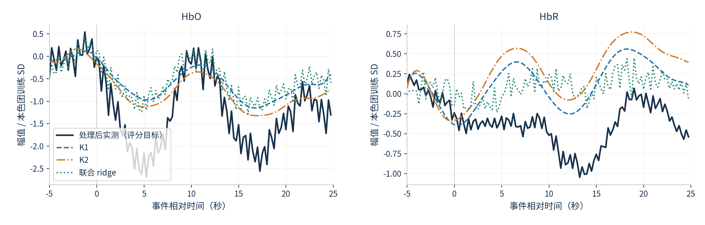
按 K1 主任务误差选择第 18/36 窗，三例来自不同被试。目标全程隐藏，事件时刻为 0；各色团用固定训练 SD 表示幅值。窗口 NRMSE：K1 0.7259；K2 0.7455；联合 ridge 0.6949。
来源：eeg_fnirs_single_trial|subject_08|session_01|event=0|prefrontal__eee78d70376440fd与前页使用同一窗口和同一评分区间；幅度比与相关分别解释。
HbO 在评分区间由 −0.02 变为 −1.31 个训练 SD；最大值时刻为事件后 10.75 秒。K1：相关 0.87，幅比 0.49，均差 +0.64 SD，峰差 −10.75 秒。K2：相关 0.84，幅比 0.61，均差 +0.44 SD，峰差 −10.75 秒。联合 ridge：相关 0.96，幅比 0.48，均差 +0.69 SD，峰差 +1.50 秒。
HbR 在评分区间由 −0.24 变为 −0.54 个训练 SD；最大值时刻为事件后 19.00 秒。K1：相关 0.57，幅比 0.61，均差 +0.57 SD，峰差 −0.75 秒。K2：相关 0.54，幅比 0.90，均差 +0.76 SD，峰差 −0.25 秒。联合 ridge：相关 0.28，幅比 0.35，均差 +0.51 SD，峰差 +0.00 秒。
幅比是预测 RMS 除以目标 RMS，1 表示幅度相同；均差是预测减实测的平均差，正值为整体高估。峰差是预测最大值时刻减实测最大值时刻，正值表示更晚，不是生理延迟估计。样例与色团纵轴独立定标以显示细节；同一子图内所有方法共享刻度。
来源：eeg_fnirs_single_trial|subject_08|session_01|event=0|prefrontal__eee78d70376440fdsubject_05 / session_01 / 事件 0 / mental_arithmetic / BL
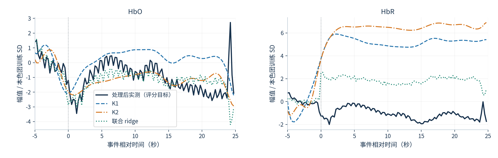
按 K1 主任务误差选择第 36/36 窗，三例来自不同被试。目标全程隐藏，事件时刻为 0；各色团用固定训练 SD 表示幅值。窗口 NRMSE：K1 4.6349；K2 5.3896；联合 ridge 2.2616。
来源：eeg_fnirs_single_trial|subject_05|session_01|event=0|prefrontal__eee78d70376440fd与前页使用同一窗口和同一评分区间；幅度比与相关分别解释。
HbO 在评分区间由 −1.20 变为 −2.08 个训练 SD；最大值时刻为事件后 24.25 秒。K1：相关 0.36，幅比 0.50，均差 +1.28 SD，峰差 −12.25 秒。K2：相关 0.22，幅比 0.90，均差 −0.14 SD，峰差 −12.00 秒。联合 ridge：相关 0.35，幅比 1.00，均差 −0.19 SD，峰差 −18.00 秒。
HbR 在评分区间由 −1.28 变为 −1.74 个训练 SD；最大值时刻为事件后 24.25 秒。K1：相关 0.26，幅比 4.29，均差 +6.33 SD，峰差 −22.00 秒。K2：相关 0.20，幅比 5.28，均差 +7.53 SD，峰差 +0.50 秒。联合 ridge：相关 0.16，幅比 1.56，均差 +2.98 SD，峰差 −24.00 秒。
幅比是预测 RMS 除以目标 RMS，1 表示幅度相同；均差是预测减实测的平均差，正值为整体高估。峰差是预测最大值时刻减实测最大值时刻，正值表示更晚，不是生理延迟估计。样例与色团纵轴独立定标以显示细节；同一子图内所有方法共享刻度。
来源：eeg_fnirs_single_trial|subject_05|session_01|event=0|prefrontal__eee78d70376440fd保持样例不变，但模型按中心隐藏任务独立重新拟合；阴影为评分区间。
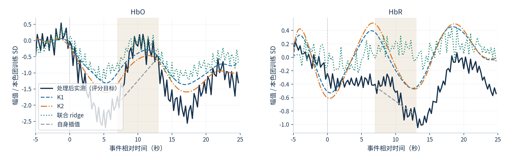
阴影为事件后 7–13 秒，其余目标可见；灰色插值只显示隐藏段。NRMSE：K1 0.4608；K2 0.4959；联合 ridge 0.6220；自身插值 0.6076。各任务独立重拟合，跨任务差异不能解释为同输入条件下的预测收益。
来源：eeg_fnirs_single_trial|subject_08|session_01|event=0|prefrontal__eee78d70376440fd以下是与实现相容的解释，尚未通过新增干预实验区分。
K1 的四个 Hb 读出共享同一对波形，只增加联合约束，无法独立表示不同位置的峰形。困难样例中，HbR 的均值和幅度偏差明显；这与结构约束相容，但不能据此确定真实成因。
K2 放开第二套轨迹后，在匹配合成中有效，在几何失配中失效。实测失败又集中于冻结求值预算；模型失配与优化不足都可能限制当前结果。
EEG log-power 是带伪迹的统计特征，训练 Hb 条件驱动也不是神经真值。没有额外独立来源锚点，不能将拟合加载符号、空间模式或峰时差赋予唯一生理含义。
当前最稳妥的用途是保留空间 ridge 作为强预测基线、保留 K1 作为受约束的条件参考。来源解释、个体参数估计及下游 tokenizer 价值都需要各自独立证据。
来源：experiments/configs/physiology_semantic_tokenizer/shared_driver_spatial_v1.yaml结果对应固定前额面板、固定生理参数、当前求解预算和公开开发人群。
空间 Hb 的直接线性信息是当前最有用的预测基线。K1 超过训练模板，但未超过同输入联合 ridge；K2 的复杂度和数值失败没有换来稳定隐藏预测收益。
K1 自动选择忽略 EEG；K2 的正确 EEG 相对 Hb-only 和错配对照的区间跨零。当前结果不建立额外的跨模态耦合资格。
真实几何与置换几何未形成稳定差异；两套独立轨迹与初态也未超过同读出的相等限制模型。不能据此命名两个皮层源或推断连接方向。
后续如继续 K2，应先在训练／合成支持上解决预算内收敛和失配问题，再定义新的冻结比较；本轮没有根据评价结果重调模型，也没有自动启动下一轮实验。
来源：/SSD_2/pid-mcm-implementation/experiments/runs/physiology_semantic_tokenizer/shared_driver_spatial/20261020_measured_v2/summary.jsonPPT 与 PDF 正文可选择；图表和公式均嵌入 PNG，保留 LaTeX 源码。
独立复算全部 11,042 个成功实测单元和 15,792 个合成单元的误差；被试聚合、共同窗口配对与 1,000 次 bootstrap 区间均与保留摘要一致。
完整表格位于 tables：逐评价单元、各组汇总、所有配对比较、权重选择、合成潜变量恢复及样例选择。逐页来源在 slide_sources.json，原运行保持唯一事实源。
数值失败及错配缺失均保留；资源先导的解释器启动错误单独保留，正式实测使用新的 v2 目录及仓库环境，没有混用失败先导的准备文件。
配套技术报告提供本套页面的完整文字、方法补充和读取入口；delivery_checks.json 记录数值复算、图像对象、可选文本及页面边界检查。
来源：docs/report/20261020_local_spatial_v5/delivery_checks.json冻结配置：/SSD_2/pid-mcm-implementation/experiments/runs/physiology_semantic_tokenizer/shared_driver_spatial/20261020_measured_v2/resolved_config.json；拟合源码快照：/SSD_2/pid-mcm-implementation/experiments/runs/physiology_semantic_tokenizer/shared_driver_spatial/20261020_measured_v2/source_snapshot。运行入口 evaluate_shared_driver_spatial.py 依次执行 plan、prepare、calibrate、measured、summarize；完整合成另用 synthetic 阶段。
PPT 中的训练 SD 是经过共同训练 RMS 缩放后的逐特征标准差。Hb 的共同正尺度保留通道和色团幅比；各样例图以对应色团的同一训练 SD 显示，未逐窗或逐帧归一。
空间核为模板坐标下的高斯距离核，默认宽度为正距离中位数；EEG 列按欧氏范数归一，Hb 行按和归一。K2 锚点固定为目标与最远的已选供体。sham 固定目标 Hb 行，只置换其他 Hb 行及 EEG 行。
signed EEG 系数的 ridge 为 0.1 倍训练 Gram 平均对角线，不新增逐通道自由系数、截距或评价期再定标。基础 ridge 也仅在训练数据拟合；不会继承 SSM 的数值失败。
错配 EEG 的供体只提供 EEG，不读取其 Hb 作为目标输入。隐藏目标及参考对输入不变、零 EEG 权重忽略、K2 同轨迹等价、解析导数和积分精度均有 fixture 测试。
主输出是被试内平均窗口 NMSE 后开方，再平均被试。选择阶段使用被试等权 NMSE，以便按预定失败惩罚选择；它与报告 NRMSE 的开方顺序不同，不是同一个统计量。
区间固定训练和选择，仅反映六名评价被试在当前面板的重采样不确定性；不是覆盖训练不确定性的总体置信声明。全部比较均为开发性描述，没有对报告中的多项区间进行家族错误率校正。
评价任务分布不平衡：心算 4 窗、基线 14 窗、左手想象 8 窗、右手想象 10 窗。没有把这些条件当作独立被试，也没有基于条件差异另行调整参数。
数值失败均达到冻结目标求值预算。当前负结果同时反映模型、优化和预算，不证明所有双源模型都无效；增加预算或改变参数属于后续版本实验。
合成驱动和状态的真值来自生成器；实测目标是真实测量经声明变换后的隐藏 Hb，实测驱动和状态只是条件估计。模板几何、未共享光极及预测增益均不能排除组织重叠、浅层或系统性干扰。
主实测：/SSD_2/pid-mcm-implementation/experiments/runs/physiology_semantic_tokenizer/shared_driver_spatial/20261020_measured_v2；完整合成：/SSD_2/pid-mcm-implementation/experiments/runs/physiology_semantic_tokenizer/shared_driver_spatial/20261020_synthetic_v1。
原始数据说明：data/EEG+NIRS Single-Trial/Open access dataset for simultaneous EEG and NIRS Brain-Computer Interfaces (BCIs).html。数据单位、时钟和来源合同：docs/DATA_CONTRACT.md。
报告图表的底层数值保存在 tables/*.csv；PPT/PDF 的每页证据路径见 slide_sources.json。误差为参考减候选时正值有利于候选；所有成功率与缺失均有原计划分母。
报告不是新的状态源；项目状态继续由 research_state/registry.json 及其生成视图持有。保留旧冒烟、资源先导和正式运行，不将通信导出替代原始运行证据。